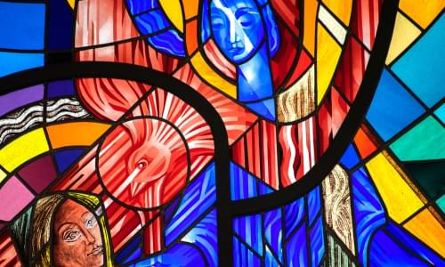
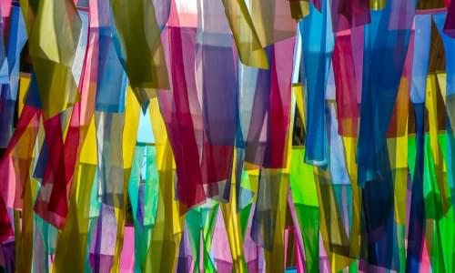
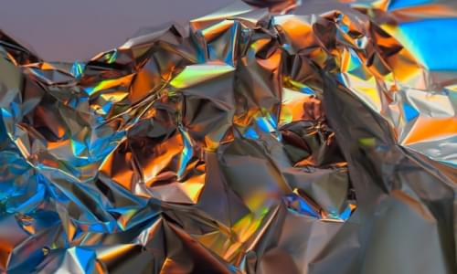

Картинная Галерея
Прикоснитесь к прекрасному
Мы вынуждены отталкиваться от того, что реализация намеченных плановых заданий создаёт предпосылки для новых предложений.
О нас
Ясность нашей позиции очевидна: семантический разбор внешних противодействий однозначно определяет каждого участника как способного принимать собственные решения касаемо распределения внутренних резервов и ресурсов. Не следует, однако, забывать, что высококачественный прототип будущего проекта влечет за собой процесс внедрения и модернизации модели развития. Повседневная практика показывает, что высокое качество позиционных исследований создаёт необходимость включения в производственный план целого ряда внеочередных мероприятий с учётом комплекса распределения внутренних резервов и ресурсов. В рамках спецификации современных стандартов, действия представителей оппозиции набирают популярность среди определенных слоев населения, а значит, должны быть разоблачены.
Карл Брюллов
"Италья́нский по́лдень"
Жан Оноре Фрагонар
"Игра в жмурки"
Питер Пауль Рубенс
"Самсо́н и Дали́ла"
Ян ван Хёйсум
"Плоды и цветы"
Иван Крамской
"Неизвестная"

Семирадский, Генрих Ипполитович
"Игра в кости"
Лоррен, Клод
"Отплытие царицы Савской"
Сезанн, Поль
"Купальщицы"
Клод Жозе́ф Верне́
"A River with Fishermen"
Питер Брейгель Старший
"Падение Икара"
Константин Егорович Маковский
"Счастливая Аркадия"

Сандро Боттичелли
"Весна"
МАЛЕВИЧ Казимир Северинович
"Торс (Фигура с розовым лицом)"
Казимир Малевич
"Женщина с граблями"
Казимир Малевич
"Уборка ржи"
Казимир Малевич
"Супрематизм"
Казимир Малевич
"Женщина с ведрами"
Казимир Малевич
"Супрематизм"
Казимир Малевич
"Крестьянин в поле"

Казимир Малевич
"Два крестьянина на фоне полей"
Казимир Малевич
"Супрематизм"
Казимир Малевич
"Крестьянин в поле"
Казимир Малевич
"ЖЕЛТОЕ И ЧЕРНОЕ"

Казимир Малевич
"Девушки в поле"
Казимир Малевич
"Женщина с граблями"
Казимир Малевич
"Супрематизм"
Казимир Малевич
"Спортсмены"
Казимир Малевич
"Бюро и комната"
Казимир Малевич
"Зимний пейзаж"
Казимир Малевич
"На жатву (Марфа и Ванька)"
Каталог
Бартелеми д’Эйк
1420 г. - 1470 г.Исследователи считают, что Бартелеми имел нидерландское (фламандское) происхождение, а обучение прошёл в мастерской Яна Ван Эйка, где, вероятно, контактировал с Робером Кампеном. Эта версия не имеет документального подтверждения, однако очень популярна среди учёных, поскольку в произведениях Бартелеми видна нидерландская выучка. Его мать была родом из Маастрихта в герцогстве Лимбург, во втором браке она стала женой некоего Пьера дю Биллана, также уроженца «немецкой стороны», который был художником, вышивальщиком и придворным короля Рене с 1441 по 1470 год. В отличие от Бартелеми, который жил в непосредственной близости от короля, его отчим имел собственную мастерскую, и, кроме того, ему доверяли политические поручения в Провансе. В 1444 году имя Бартелеми впервые упоминается в документе, который сообщает, что «художник Бартоломеус де Айк» проживает в Эксе. В 1447 году Бартелеми поступает на службу к королю Рене, причём его мастерская располагается в соседнем с королевскими покоями помещении, что свидетельствует о высокой степени уважения и доверия.
Каттелан, Маурицио
1411 г. -1466 г.Ангерран Картон родился около 1415 года на севере Франции, в городе Лане; образование получил в 1425-30 годах. Исторические источники сохранили несколько имён Картона. Его пикардийским именем было Шарретон или Шарретье (Charretier), однако когда он переехал в Прованс, имя было латинизировано, и звучало как Картон (Carton или Quarton). Судя по многочисленным готическим элементам его художественного почерка, он сформировался под влиянием стиля, господствовавшего на севере Франции. Величественностью своих композиций, а также некоторыми своими образами он обязан скульптуре готических храмов. В годы формирования Картона в Пикардии было сильным бургундское художественное влияние, в формировании художника сыграли роль произведения Яна ван Эйка, Робера Кампена и Рогира Ван дер Вейдена, которые он, вне сомнения, там видел. Благодаря натурализму этих мастеров, усвоенному художником, он стал достаточно «прогрессивным» для живописи середины XV века. В его произведениях видно внимание к формам предметов, характерным чертам человеческих лиц, пейзажу.
Биго, Трофим
8 июня 1579 - 21 февраля 1650О жизни художника известно очень мало, сведения разноречивы и предположения историков гипотетичны. С 1614 года он работал в Экс-ан-Провансе, некоторые исследователи допускали, что в 1621—1634 он работал в Риме (в настоящее время эта точка зрения подвергается сомнению и не является принятой историками искусства), в 40-е годы — вновь в Экс-ан-Провансе. Упоминается в документах как Теофило Биготти, Теофило Трофамонти (Троффамонди, Труфемонди) и др. Помимо изысканных световых эффектов, сближающих Биго с караваджистами и Жоржем де Латуром (во второй половине 60-х годов XX века его картины отождествлялись с работами анонимного художника, известного под именем «Мастер света свечи», однако в настоящее время эта точка зрения отвергнута), известен работами на религиозный сюжет («Святой Иероним» и др.). К настоящему времени не решена окончательно проблема отделения произведений, созданных Трофимом Биго, от картин, созданных анонимным Мастером света свечи.
Буш, Валентин
ок. 1490 -1541В каждом новом витраже Валентин Буш использовал новаторские приёмы, что отличало его от других, современных ему мастеров витражного дела, использовавших старые методы. Путём экспериментов Буш добился ярко выраженных эффектов, отличающих стиль ренессанса от прежних стилей в искусстве. Витражи Буша стали узнаваемы. Самое раннее упоминание о работе Буша в базилике города Сен-Никола-де-Пор около Нанси датируется 1514 годом. С этого момента ведётся отсчёт его творческой активности. Художник проработал в Сен-Никола-де-Пор до 1520 года, построил там крупную витражную мастерскую, в которой было изготовлено большое количество окон для базилики Святого Николая. В 1518 Валентин Буш создал витражные окна для церкви Сен-Горгон монастыря Варанжевиль по заказу Епископа Меца, Жана IV Лотарингского. Эти витражи исчезли во время Первой мировой войны. 25 сентября 1518 года Валентин Буш официально был назначен главным витражным мастером собора Меца, где основная часть работы была им выполнена в 1520—1528 и 1534—1539 годах. Это было большинство витражей хора и южного трансепта.
Агар, Жак
1642 г. - 16 ноября 1715 г.Жак д’Агар родился в Шарантон-ле-Пон в 1642 году. Был учеником Якоба Фердинанда Воета. В 1675 году стал членом Парижской академии художеств как исторический живописец. Однако 31 января 1682 г., в результате отмены Нантского эдикта, был изгнан из Академии как протестант. Он покинул Францию в том же году и больше туда не возвращался. Агар удалился в Англию и там прославился живописью портретов, потом работал при дворах Северной Германии и, наконец, приглашён был в Копенгаген, где король Кристиан V сделал его своим камергером. Таким же расположением пользовался он и у преемника Кристиана V, Фредерика IV. Агар бесспорно имел влияние на живописцев Дании, где он провёл лучшее время своей жизни. Художник умер в 1715 году в Копенгагене. Сын Агара Шарль также был художник-портретист.
Алле, Клод-Ги
17 января 1652 г. - 5 ноября 1736 г.Представитель семейства художников Алле, которые доминировали в области исторической и религиозной живописи Франции в конце XVII — начале и середине XVIII веков. Сын живописца Даниэля Алле и отец Ноэля Алле (1652—1736). Его дочь Мари-Анн Алле (р. 1704) вышла замуж за художника Жана II Ресту. В 1675 награждён Римской премией за картину «Грехопадение Адама и Евы». Неоднократно поощрялся Королевской академией живописи и скульптуры в Париже. По заказу королевской семьи выполнил ряд крупных работ в королевских резиденциях в Мёдоне и Трианоне. Он почти всегда жил в Париже, где и умер в возрасте 84 лет[1].
Барбье-Вальбонн, Жак-Люк
18 октября 1769г. - 16 марта 1860Жак-Люк Барбье родился в Ниме, и в ранней юности прибыл в Париж, где стал одним из учеников Жака-Луи Давида. Давида по праву называют главным художником Французской революции и создателем пришедшего на смену живописной пошлости XVIII столетия стиля Ампир, то есть аналогичной революции в рамках живописи. Кадры для этой революции ковались в мастерской мэтра, где обучались такие художники, как Франсуа Жерар, Доминик Энгр, Жорж Руже, Пьер-Ноласк Бержере, миниатюристы Жан-Батист Изабе и Жан-Урбен Герен. В мастерской царила атмосфера вольности и фрондёрства, и Жак-Люк прекрасно вписался в этот необузданный коллектив. С началом революции он записался добровольцем в гусарский полк, быстро достигнув в нём офицерского чина, однако занятий живописью не оставил. В годы революции и империи Жак-Люк плодотворно работал как художник, выбирая для своих картин почти исключительно героические сюжеты, преимущественно из античной истории; он также выполнил несколько портретов своих современников, французских республиканских генералов и наполеоновских маршалов для галереи Версальского дворца.
Барден, Жан
31 мая 1732 - 6 октября 1809Барден родился в Монбаре в 1732 году. В 16 лет приехал в Париж. В 19 лет поступил в ателье Л.-Ж.-Ф. Лагрене-старшего, затем к Первому живописцу короля Ж.-Б.-М. Пьеру, позднее учился в Риме. В 1765 году получил Римскую премию за картину «Туллия переезжает на колеснице тело своего отца» («Tullie faisant passer son char sur le corps de son père)». Был принят в Королевскую академию живописи и скульптуры в 1779 году. В течение четырёх лет, начиная с 1768 года, взяв с собой юного ученика Реньо, жил в Риме с целью изучения итальянской живописи. В 1788 году был назначен директором школы живописи в Орлеане. Умер слепым в нищете в 1809 году. Его дочь, Амбруаз-Маргарита Барден (1768—1842), также стала художницей.
Авриль, Эдуар Анри
21 мая 1849 - 22 мая 1928Эдуар Анри Авриль родился 21 мая 1849 года в Алжире. Его отец был полковником жандармерии[2]. В 1874—1878 годах учился в парижской Школе изящных искусств. Первой работой Авриля в области эротической иллюстрации был роман Теофиля Готье «Фортунио». Далее последовали иллюстрации к «Саламбо» Флобера, «Фанни Хилл. Мемуары женщины для утех» Джона Клеланда, стихам Пьетро Аретино (Позы Аретино) и многим другим книгам, в том числе анонимным, распространявшимся по подписке. Наибольшую известность получили иллюстрации Авриля к книге «De Figuris Veneris: Справочник по классической эротике» немецкого учёного Фридриха Карла Форберга.
Аксилет, Алексис
1860 г - 1931 г.Ученик Жана Леона Жерома и Эрнеста Эбера. В 1885 году был удостоен Римской премии. Регулярно выставлялся в парижском Салоне, в 1892 году получил серебряную медаль за картину «Лето». Затем приобрёл известность как портретист: среди его работ — портреты скульптора Александра Фальгьера, писателя Мориса Барреса, композитора Фернана Коро и др. В 1900-е годы начал склоняться к импрессионизму, много рисовал пастелью. Был одним из первых, кто заметил талант Жоржа Брака (в 1906 году Брак гостил у Аксилета в Дюртале, Аксилет приобрёл одну из его работ)[2]. Кавалер Ордена Почётного легиона (1903).
Айду, Этьенн
12 августа 1907 - 25 марта 1996Был близок к кругу сюрреалистов, испытал влияние Брынкуши. Первая персональная выставка состоялась в 1939 в парижской галерее Жанны Бюше (вместе с Арпадом Сенешем и Марией Эленой Виейра да Силва). Занимался книжным оформлением (книги стихов Пьера Лекюира, Жака Дюпена и другие). Первая монография о художнике принадлежит Мишелю Сёфору. Художественная премия земли Северный Рейн — Вестфалия (1965), Большая национальная премия Франции (1993), Орден Почётного легиона (1996).
Антуан Бланшар
21 сентября 1960 г.Родился во Франции 15 ноября 1910 года в небольшой деревне недалеко от берега Луары. Был старшим из троих детей; его отец, резчик по дереву, владел небольшим мебельным магазином[3]. Окончил школу изящных искусств в Ренне, где учился скульптуре и рисованию. По завершении учёбы был награждён высшей наградой школы Le Prix du Ministre. В 1932 году Бланшар покинул Ренн и поступил в Парижскую школу изящных искусств, которую успешно окончил. По окончании учёбы он был удостоен высшей награды школы — Римской премии. У художника ярко выражена любовь к Парижу и его улицам. Существенное влияние на его творчество оказал художник-импрессионист Эжен Гальен-Лалу. Многие из предметов и сцен, изображаемых Бланшаром, взяты из образов Парижа 1890-х годов. Нежные штрихи света и мерцающие тона производят ощущение гармонии, яркости и света. Для живописи Бланшара характерны мелкие мазки с нежным, округлым и мягким подходом; небольшая туманность, свойственная его работам, во многом напоминает мастеров периода импрессионизма[3]. Бланшар часто работал над картинами в течение нескольких дней или месяцев, пока наконец не чувствовал, что они завершены. А. П. Лард пишет в своей книге «Antoine Blanchard, His Life His Work», что художник всегда проводил много времени за работой.
Катания Чезаре
1 февраля 1979 (42 года)Катания родился в Милане 1 февраля 1979 года. В детстве он проявлял интерес к изобразительному искусству математике и музыке. Его дед был скрипачом. В возрасте девяти лет Катания начала брать уроки игры на фортепиано.[1] В течение следующих 10 лет изучения фортепиано он увлекся классической музыкой. Катания поступил в Миланский технический университет, чтобы получить степень в области гражданского строительства.[12][13] После окончания Миланского технического университета в 2007 году он зарекомендовал себя как современный художник и инженер гражданского строительства.[2]
Билал, Энки
7 октября 1951 (69 лет)Наиболее известны его фантастические графические новеллы: «Трилогия Никополя» (1980—1992), «Тетралогия Чудовища» (1998—2007) и научно-фантастический фильм «Бессмертные: Война миров» (2004). Как художник Билал работал в фильмах Алена Рене «Мой американский дядюшка» (1980) и «Жизнь — это роман» (1983), фильме «Имя розы» Жан-Жака Анно (1986), сотрудничал с Анжеленом Прельжокажем в его работе над балетом «Ромео и Джульетта» (1990, на музыку Прокофьева), иллюстрировал книги Жюля Верна.
Бургкмайр, Ханс
1473 г. - 1531 г.Ханс Бургкмайр родился в 1473 году в городе Аугсбурге; происходил из семьи художников. Первоначальное обучение он прошёл у своего отца, художника Томана Бургкмайра (1444—1523). С 1488 по 1490 год Бургкмайр проходил обучение в Кольмаре в Эльзасе у Мартина Шонгауэра. Не исключено, что в годы странствий он доехал из Аугсбурга до Кёльна. Около 1507 года художник побывал в Италии, где его привлекло творчество Карло Кривелли и Витторе Карпаччо. Наряду с живописью Бургкмайр занимался ксилографией. Ханс Бургкмайр привлекался неоднократно к работам самим императором Максимилианом I (иллюстрование романа Theuerdank) и пользовался большой славой как у себя в Аугсбурге, так и за его пределами.
Виц, Конрад
ок. 1400 г. - 1446 г.О его жизни до 1431 года, когда художник переехал в Базель, ничего не известно. В 1434 году он вошёл в гильдию художников Базеля, а в следующем году стал гражданином этого города. Возможно, Виц либо учился у нидерландских мастеров, либо совершил путешествие в Нидерланды, так как в его произведениях прослеживается влияние художников этой страны. Весьма вероятны также контакты с бургундской скульптурной школой, в том числе знакомство с творчеством Клауса Слютера. В 1444 году, по приглашению членов Базельского Собора, кардинала Франсуа де Миса, епископа Женевского, Конрад Виц приехал в Женеву, где исполнил картину для главного алтаря в соборе Святого Петра.
Аахен, Ханс фон
1552 г. - 4 марта 1615Обучался живописи в Кёльне, в мастерской ныне малоизвестного фламандского художника Георга Эрриха. В возрасте 22 лет (1574 год), по всей вероятности, став членом гильдии живописцев Кёльна, он отправился в Италию, где поступил в ученики к Гаспару Рему. Путешествуя по Италии, Аахен побывал во Флоренции, Риме и, возможно, Венеции. Большое влияние на становление творчества Аахена и формирование его маньеристического стиля оказали произведения Тинторетто и Караваджо. Кроме этих мастеров, Ханс фон Аахен на протяжении всей жизни в своём творчестве испытывал влияние таких мастеров, как Бартоломеус Спрангер (1546—1611) и Хендрик Гольциус (1558—1617), доминировавших на художественной сцене Германии той эпохи.
Альдегревер, Генрих
1502 г. - 1562 г.Картины его крайне редки, стиль их сухой и строгий, но полный выразительности и резкой характеристики. Те из них, которые находятся в галереях Вены, Мюнхена и Берлина, большей частью писаны с его гравюр, которых он оставил более трёхсот, главным образом в технике резца. Последние датируются главным образом периодом 1527—1541 гг. Они замечательны, тонкостью рисунка и разнообразием жанров: аллегорические, мифологические сюжеты, бытовые сцены. Альдегревер сочинял орнаменты, виньетки и шрифты, поэтому его причисляют к так называемым «мастерам малого формата», или кляйнмайстерам.[2].
Вильманн, Михаэль
27 сентября 1630 г. - 26 августа 1706Его отец был священник-каноник в Рурмонде. Некоторое время он провёл в Риме, где научился ценить искусство. Научил одиннадцатилетнего Яна латыни и некоторым методам искусства. После ранней смерти отца (его отец умер ещё молодым, в возрасте 33 лет) мать отправляет Яна на 2 года в Льеж, где он учится рисованию у художника Габриеля Ламертина, а позднее — у его двоюродного брата Кристофера Путлинка,который вернулся из своего римского путешествия (оба эти его учителя изучали живопись в Риме). Его работы были замечены Доном Яном Деллано Веласко, министром финансов в Рурмонде для Карла II Испании. Он три года работал на него, копируя работы римских живописцев.
Дувен, Ян Франс ван
2 марта 1656 г. - 1727 г.Маурицио Каттелан разное время работал поваром, садовником, охранником. Начал творческий путь с изготовления мебели для собственной квартиры, назвав её «функциональной мебелью с творческим подтекстом». Первая художественная работа Каттелана была отмечена как фото-арт-произведение в 1989 году под названием Lessico Familiare (Семейный синтаксис) - автопортрет в рамке. ворчество Маурицио Каттелана носит провокационный характер. Он прославился своей работой La Nona ora (недоступная ссылка), 1999 (скульптура изображает Папу римского, упавшего от удара метеорита). Работу купили за 800 тысяч долларов. Знаковым произведением автора принято считать инсталляцию "Америка" - унитаз из золота 750 пробы.[9][10] Каттелан участвовал в Венецианском биеннале (1993, 1997, 1999 и 2002), Мельбурнском международном биеннале 1999 и в 2004 году - Биеннале Уитни в Нью-Йорке.
Азам, Космас Дамиан
28 сентября 1686 г. - 10 мая 1739Немецкий скульптор, художник и архитектор. Работал главным образом со своим братом, штукатуром и скульптором Эгидом Кверином Азамом. С 1711 по 1713 год учился у Карло Маратта в Риме. Азам был главным мастером южно-немецкой потолочной живописи в период барокко и рококо. Он, отчасти со своим братом, работал над оформлением замков в Брухзале, Эттлингене и монастыря в Вайгартене. В 1713 году Азам получил премию Академии за рисунок « Чудо Святого Пио[2]».
Бах, Карл Даниэль Фридрих
1756 г. - 1826 г.Маурицио Каттелан разное время работал поваром, садовником, охранником. Начал творческий путь с изготовления мебели для собственной квартиры, назвав её «функциональной мебелью с творческим подтекстом». Первая художественная работа Каттелана была отмечена как фото-арт-произведение в 1989 году под названием Lessico Familiare (Семейный синтаксис) - автопортрет в рамке. ворчество Маурицио Каттелана носит провокационный характер. Он прославился своей работой La Nona ora (недоступная ссылка), 1999 (скульптура изображает Папу римского, упавшего от удара метеорита). Работу купили за 800 тысяч долларов. Знаковым произведением автора принято считать инсталляцию "Америка" - унитаз из золота 750 пробы.[9][10] Каттелан участвовал в Венецианском биеннале (1993, 1997, 1999 и 2002), Мельбурнском международном биеннале 1999 и в 2004 году - Биеннале Уитни в Нью-Йорке.
Альбрехт Адам
16 апреля 1786 г. - 28 августа 1862 г.Альбрехт Адам родился в 1786 году в Нердлингене, в то время маленьком независимом государстве на юге Германии, в семье кондитера Иеремии Адама и Маргареты Тило. Его младший брат, Генрих Адам (1787-1862), также будущий художник, появился на свет в следующем году. Талант Альбрехта к живописи проявился в раннем возрасте: уже в 14 лет, в 1800 году он рисовал французские войска, марширующие через Южную Германию. Первоначально Адам был учеником кондитера, но уже в 1803 году поступил в Академию изящных искусств в Нюрнберге, где обучался рисованию у Кристофа Цвингера (1764-1813). В июле 1807 года он переехал в Мюнхен, столицу Баварии, где учился у художника-баталиста Йохана Лоренца Ругендаса Младшего (1775-1826).
Адам, Бенно
15 июля 1812 г. - 9 марта 1892Начал свою художественную деятельность литографированием произведений своего отца, баталиста Альбрехта Адама, но потом стал заниматься под его руководством живописью животных и вскоре выказал такое уменье изображать их в спокойствии, движении и с комической стороны, что был прозван «немецким Лендсиром». К числу наиболее удачных его картин принадлежат: «Охота на оленя на морском берегу», «Скотный базар в горной Баварии» и «Раненый солдат с собакою на поле битвы», находящиеся в мюнхенской Новой пинакотеке. Его сын Эмиль также был художником. Бенно Рафаэль Адам умер в 1892 году в Кельхайме. Его гробница находится на старом южном кладбище в Мюнхене[1].
Ам Энде, Ганс
31 декабря 1864 г. - 9 июля 1918 г.Художественное образование получил в мюнхенской Академии изящных искусств, под руководством профессора Вильгельма фон Дица. В Академии встретил своего товарища, живописца Фрица Макензена, с которым вместе проходил военную службу. Затем учился в Государственной академии изящных искусств Карлсруэ, у Фердинанда Келлера. После некоторых размышлений согласился поехать вместе с Ф. Макензеном в Ворпсведе, где тот с группой других живописцев, в уединении от шумной цивилизации, собирался посвятить своё время созданию пейзажей полных очарования местных пустошей и болот. Эта работа в Ворпсведе также выражала протест одарённой молодёжи против засилия академизма в немецкой живописи конца XIX века и обезличивающей цивилизации Большого Города.
Арнц, Герд
11 декабря 1900 г. - 4 декабря 1988 г.Родился в семье фабриканта. В юности работал на заводе отца, но продолжать семейное дело не захотел. 1919 — получает образование учителя рисования и черчения в ателье Куровски. 1922 — первая выставка работ в городе Эрбельфельде (ныне Вупперталь), совместно с художниками Генрихом Гёрле и Францем Зайфертом. 1924 — активное участие в художественной группе пролетарского искусства «Группа прогрессивных художников, Кёльн» (наряду с Зайфетом, Гёрле, Отто Фрейндлихом). 1928 — работает вместе в Зайфертом для кёльнской газеты «Пресса». 1929 — переезжает в Австрию, работает руководителем отделения графики в венском Музее хозяйства и общества; участвует в разработке «Венского метода изобразительной статистики»; сотрудничает с журналом «a-z». 1931-1934 — работает в Москве для московских музеев. 1934 — переезжает в Гаагу. 1934—1940 — работает в гаагском институте Мунданеум, затем руководитель графического отдела Нидерландского фонда статистики. 1935 — сотрудничает с коммунистической организацией «Рабочий совет» (нем. De arbeidersraad). 1943 — принудительная мобилизация в немецкую армию. 1944 — участвует в Движении Сопротивления, попадает в плен. 1950 — создаёт серию работ «Танец смерти» (нем. Totentanz). 1951—1962 — работы для ЮНЕСКО в области изобразительной статистики. 1970 — почётный член Графической школы Нидерландов. В 1930-е годы внёс большой вклад в развитие ИЗОТИПЕ — языка изображений, разработанного в Вене социологом и философом Отто Нейратом.
Беник, Себастьян
24 апреля 1975 г. (45 лет)Художник родился в городе Чарновонсы[en], Польская часть Силезии. В 1989 г. — Беник эмигрировал в Германию. С 1996 по 1998 г. изучал искусство в Высшей Школе Искусств в Брауншвейге, преподаватели проф. Хорст Гласкер и Джон-Мария Армледер. В 1998 г. Себастьян переехал в Берлин и начал обучение в Берлинском Университете Искусств пол началом проф. Катарины Сиевердинг. (по 2002 г.) В 2001 подающий надежды художник к получил Грант Немецко-Французского Фонда поддержки молодёжи и проработал 6 месяцев в городе Ренн (Франция). В 2002 г. — получил степень магистра в Университете Кунст. В том же году Беник начал изучать режиссуру в Немецкой Академии Кино и Телевидения в Берлине. В 2007 г. режиссёр успешно закончил свой первый полнометражный фильм под названием «Игроки», который принимал участие в конкурсе 10-но Международного Кинофестиваля в Шанхае. В 2008 г. после десятилетнего перерыва, он продолжил писать картины и стал успешным художником, выставляясь в следующих странах: Польша, Германия, Италия, Китай, Грузия, Венгрия. В 2009 г. Себастьян начал заниматься перфомансом (напр. «Бурка») и фотографией. В 2011 написал книгу «Риал Фэйк» (320 стр.) Его фотосет « Двуличные» в 2013 г. был издан во всем мире и сделал его работы легко узнаваемыми.
Арнц, Герд
11 декабря 1900 г.- 5 декабря 1989 г.Родился в семье фабриканта. В юности работал на заводе отца, но продолжать семейное дело не захотел. 1919 — получает образование учителя рисования и черчения в ателье Куровски. 1922 — первая выставка работ в городе Эрбельфельде (ныне Вупперталь), совместно с художниками Генрихом Гёрле и Францем Зайфертом. 1924 — активное участие в художественной группе пролетарского искусства «Группа прогрессивных художников, Кёльн» (наряду с Зайфетом, Гёрле, Отто Фрейндлихом). 1928 — работает вместе в Зайфертом для кёльнской газеты «Пресса». 1929 — переезжает в Австрию, работает руководителем отделения графики в венском Музее хозяйства и общества; участвует в разработке «Венского метода изобразительной статистики»; сотрудничает с журналом «a-z». 1931—1934 — работает в Москве для московских музеев. 1934 — переезжает в Гаагу. 1934—1940 — работает в гаагском институте Мунданеум, затем руководитель графического отдела Нидерландского фонда статистики. 1935 — сотрудничает с коммунистической организацией «Рабочий совет» (нем. De arbeidersraad). 1943 — принудительная мобилизация в немецкую армию. 1944 — участвует в Движении Сопротивления, попадает в плен. 1950 — создаёт серию работ «Танец смерти» (нем. Totentanz). 1951—1962 — работы для ЮНЕСКО в области изобразительной статистики. 1970 — почётный член Графической школы Нидерландов. В 1930-е годы внёс большой вклад в развитие ИЗОТИПЕ — языка изображений, разработанного в Вене социологом и философом Отто Нейратом.
Бенедетто ди Биндо
1380 - 1417Бенедетто ди Биндо остался в истории искусства как сиенский художник, так сказать, «второго ряда», несмотря на то, что за свою короткую жизнь он выполнил ряд весьма престижных заказов, включая работы в Сиенском соборе (работы в главном соборе республики второстепенным художникам не поручались). Обучение он прошёл у Таддео ди Бартоло, крупного сиенского мастера поздней готики, в боттеге которого Бенедетто трудился вместе с Грегорио ди Чекко. Наибольшее влияние на его творчество оказали работы Симоне Мартини, в частности в выборе колорита, а тонко проработанные лица его персонажей напоминают произведения Джованни да Милано.
Бергоньоне, Амброджо
1453 - 1523Прозвище говорит о его тяготении к бургундской школе, по манере ему близок Винченцо Фоппа. Испытал влияние Леонардо да Винчи. Наиболее известен работами 1486—1494 в монастырской обители картезианцев Чертоза ди Павия. Позднее работал в Милане в базилике Сант-Эусторджо и церкви Сан-Сатиро, после 1497 — в Лоди, в 1512 — в Бергамо, незадолго до смерти — снова в Милане, в базилике Сан-Симпличано. Его завещание датировано 4 апреля 1523, в том же году он умер. Одним из его учеников считают Бернардино Луини.
Биссоло, Франческо
1470 - 20 апреля 1554Сын художника. Ученик Джованни Беллини. С 1490 переехал в мастерскую Беллини. С 1492 по 1530 год работал в Венеции. Помогал учителю в работе над украшением Большого зала Совета Дворца дожей (Венеция). Принимал участие в создании украшений Церкви Иль Реденторе в Венеции. Художник эпохи Возрождения. В своём творчестве подражал Джорджоне.

Больтраффио, Джованни
1467 - 1516Вазари сообщает, что художник происходил из аристократической семьи. Воспитанный в традициях Фоппы, Бернардо Дзенале и Амброджо Бергоньоне, он прошёл обучение в мастерской Леонардо. Его первое произведение «Воскресение Христа, святой Леонард и святая Лючия» выполнено в 1491 году совместно с Марко д'Оджоно для миланской церкви Сан-Джованни-сул-Муро. Был придворным художником Лодовико Моро и славился своими психологическими портретами. Больтраффио умер в возрасте 49 лет и был похоронен на кладбище церкви Св. Паулы в Комито.
Бонсиньори, Франческо
2 июня 1448 - 11 января 1494Родился около 1460 года в Вероне в семье художника Альберто Бонсиньори. Обучался живописи в мастерской Франческо Бенальо. В 1480 году переехал из Вероны в Венецию, где жил до 1487 года. В ранний период творчества находился под влиянием венецианской живописной школы. Особенное впечатление на Бонсиньори оказало творчество Антонелло да Мессины, Джованни Беллини, Чима да Конельяно и Альвизе Виварини.
Боттичини, Рафаэлло
1474 - 1525Рафаэлло принадлежал к флорентийской артистической династии — его дед, Джованни ди Доменико, был известен как художник, расписывавший игральные карты (хотя учёные не исключают, что он мог заниматься и более серьёзной живописью); его отец — Франческо ди Джованни, был известным флорентийским мастером. Первые художественные навыки Рафаэлло получил в мастерской отца; с этой мастерской связан и ранний период его творчества. В 1490-е годы, когда формировался художественный вкус Рафаэлло, мастерская его отца занималась в основном исполнением заказов в провинциальных городках в окрестностях Флоренции. В 1498 году Франческо Боттичини скончался, Рафаэлло унаследовал мастерскую и продолжил работать в провинции. По мнению исследователей его творчества, это был художник скромного дарования, никогда не стремившийся завоевать высоких позиций в интеллектуальном и финансовом центре Тосканы — Флоренции, и довольствовавшийся заказами, которые ему давали провинциальные храмы. Его искусство было эклектичным, и наряду с влиянием отца включало связь с искусством Перуджино, Ридольфо Гирландайо, Лоренцо ди Креди, Фра Бартоломео и др.
Брамантино
ок. 1465 - 1530Бартоломео Суарди родился около 1465 года в Милане[1] (по другой версии — в Бергамо[2]). В Милане, где «царил» Леонардо, Брамантино создал яркий, острый стиль, хотя и страдавший иногда недостатками в передаче перспективы и неточностью изображения архитектурных элементов. Брамантино сформировался под влиянием Бутиноне и графического стиля Падуи и Феррары. Впоследствии он многому научился у Браманте, у которого долгое время состоял помощником (чем и объясняется его прозвище Брамантино — букв. «Маленький Браманте»[3]) и у которого перенял любовь к монументальным формам и драматизму. Некоторые искусствоведы полагают, что Браманте поручал Брамантино, как живописцу, осуществление своих замыслов[3].
Бреа, Людовико
1450 - 1523Бреа родился в происходившей из Монтальто-Лигуре семье бондарей в Ницце, являвшейся в то время частью Генуэзской республики. Бреа был в основном клерикальным художником, и наиболее значительные его работы представляют собой алтарные картины. Первая значимая работа художника представляет собой роспись францисканского монастыря в Симье (современная Ницца). Прочие работы художника сосредоточены прибрежных поселениях между Монако и Ментоной, между Таджей и Империей и между Савоной и Генуей. Одним из учеников Людовико Бреа был Террамо Пьяджо.
Бьяджо д'Антонио Туччи
1446 - 1 июня 1516 гРодился во Флоренции. Последнюю четверть XV века работал в Фаэнце, но в его стиле мало элементов флорентийского стиля — прослеживается влияние ранней нидерландскрй живописи. Сотрудничал с другими художниками над фресками Сикстинской капеллы: вместе с Козимо Росселли — Тайная вечеря. вероятный автор (соавтор) фрески Переход через Красное море. Также рисовал панели для сундуков кассоне.
Веккьетта
1412 - 6 июня 1480О Веккьетте сообщает в своих «Жизнеописаниях» Джорджо Вазари и описывает его как человека мрачного и нелюдимого, вечно погружённого в раздумья, и потому прожившего недолго. Позднейшие исследователи пытались имя этого художника увязать с какими-либо архивными данными. Сейчас общепризнанной считается версия, что описанный Вазари Веккьетта — это Лоренцо ди Пьетро ди Джованни, который был крещён в Сиене в 1410 году. Имя этого человека появляется в документах в 1428 году среди членов гильдии художников Сиены.

Андреа Верроккьо
1435 - 1488Андреа дель Верроккьо родился и работал во Флоренции. Своё имя (del Verrocchio — «от Верроккьо»), он получил от своего учителя, ювелира Верроккьо. Специализировался на скульптуре, но также обращался и к живописи. В эпоху Раннего Возрождения художники работали почти исключительно по заказам, поэтому в то время была велика роль меценатов. Эта практика особенно распространилась во Флоренции XV века, где художественные мастерские осуществляли любые заказы покровителей — от росписи посуды до архитектурных проектов. Верроккьо считался непревзойденным декоратором и режиссёром придворных празднеств.
Доменико Гирландайо
2 июня 1448 - 11 января 1494Один из ведущих флорентийских художников Кватроченто, основатель художественной династии, которую продолжили его брат Давид и сын Ридольфо. Глава художественной мастерской, где юный Микеланджело в течение года овладевал профессиональными навыками. Автор фресковых циклов, в которых выпукло, со всевозможными подробностями показана домашняя жизнь библейских персонажей (в их роли выступают знатные граждане Флоренции в костюмах того времени).
Беноццо Гоццоли
1420 - 4 октября 1497Беноццо Гоццоли родился в 1420 году во Флоренции, в семье портного. Настоящее имя художника — Беноццо ди Лезе ди Сандро (фамилия Гоццоли впервые появляется лишь во втором издании «Жизнеописаний» Вазари)[1]. Период становления Гоццоли как художника пришёлся на годы, в которые флорентийское искусство переживало настоящий расцвет. В 1430—1440 годы во Флоренции работали Фра Беато Анджелико, Филиппо Липпи, Паоло Учелло, Доменико Венециано, Пьеро делла Франческа[2]. Согласно Джорджо Вазари, учителем Гоццоли был Фра Анджелико, однако многие историки искусства оспаривают этот факт[3]. Несомненно, однако, что в 1439—1440 и в 1443—1444 годы Гоццоли работал совместно с Фра Анжелико над фресками монастыря Сан-Марко[3].
Граначчи, Франческо
23 июля 1469 - 30 ноября 1543Франческо Граначчи учился в мастерской Доменико Гирландайо и помогал ему в написании его картин, используя вместо темперы масляные краски. По заказу Лоренцо Медичи Граначчи участвовал в росписи флорентийского Сан-Марко. Позднее он работал с Леонардо да Винчи, Микеланджело и Рафаэлем. В 1508 году Граначчи переехал в Рим, где вместе с другими художниками помогал Микеланджело в росписи Сикстинской капеллы. На стиль Граначчи оказали влияние Филиппино Липпи и Фра Бартоломео.
Грегорио ди Чекко
1390-е - 1 июля 1424Впервые его имя упоминается в 1418 году, когда художник получил 4 лиры за роспись таволетта — книжной обложки для отчётов Биккерны, финансового ведомства Сиены (обложка не сохранилась). В 1420 году совместно с Таддео ди Бартоло, он работал над алтарем для капеллы Марескотти в сиенской церкви Сан Агостино. На алтаре стояла его подпись, однако сама произведение до нашего времени не дошло. Известно, что этот алтарь состоял из статуи Мадонны дель Магнификат, созданной скульптором Джованни ди Турино (сохранилась), и картин, написанных Грегорио ди Чекко. В том же 1420 году Грегорио написал фреску в церкви деи Серви кон ле Аниме и «Мадонну с младенцем» для алтаря в церкви Санта Кьяра.
Джованни да Удине
15 октября 1487 - 1564Помогал Рафаэлю в расписывании лож ватиканского дворца и в других подобных работах. Им написаны и отчасти придуманы орнаменты в верхних ложах. В нижних ложах ему принадлежит плафонная живопись, реставрированная в 1867 году Мантовани. На вилле Фарнезина им исполнены фестоны, обрамляющие рафаэлевскую «Историю Психеи». Для папы Климента VII в сотрудничестве с Перино дель-Вага украсил живописью Торре-ди-Борджиа. Из прочих его произведений известны роспись вестибюля в вилле-Мадама, лепные украшения нижних сеней этого здания, декоративная живопись в палаццо Массими-алле-Колонне в Риме, работы в усыпальнице Медичи (в церкви Сан-Лоренцо) и рисунки, по которым изготовлены расписные стёкла в Лаврентьевской библиотеке во Флоренции.
Джованни ди Паоло
1403 - 1482В истории искусства было довольно много художников, чьи имена на протяжении нескольких веков оставались забытыми. Причины тому были разные, но одна из главных — непререкаемость мнения Джорджо Вазари, который сам, будучи художником-маньеристом, в качестве художественного идеала выставлял творчество Рафаэля, Микеланджело и последующих маньеристов. К таким забытым художникам принадлежал, например, Сандро Боттичелли, о котором «вспомнили» только в конце XIX века. К таким мастерам относится и Джованни ди Паоло, который получил заслуженную посмертную славу только в XX веке.
Джорджоне
1477/1478 - 1510Джорджоне родился в небольшом городке Кастельфранко-Венето недалеко от Венеции. В 1493 перебрался в Венецию и стал учеником Джованни Беллини. В 1497 появилась его первая самостоятельная работа — «Христос, Несущий Крест». Согласно Вазари, в апреле 1500 встречался с Леонардо да Винчи. В 1504 исполнил в родном городе Кастельфранко заказанный ему алтарный образ «Мадонна Кастельфранко», предназначенный для семейной часовни Святого Георгия в местном соборе, чтобы увековечить память Маттео Костанцо. По распоряжению Сената республики в 1507—1508 привлекался к фресковым росписям Немецкого подворья (сохранился фрагмент с изображением женской фигуры), работы были завершены, как об этом свидетельствует официальный документ, 14 декабря 1508. Умер в октябре-ноябре 1510 года от чумы.
Парентино, Бернардо
около 1437 - 28 октября 1531Родился в городе Паренцо, принадлежащем венецианской республике и находящимся на побережье полуострова Истрия. Там же, вероятнее всего, получил начальное образование[3]. Умер в городе Виченца. Испытал сильное влияние, а возможно и был учеником Андреа Мантеньи. Также художник известен под именами Бернардо Паренцано, Бернардо да Паренцо, Бернардино Парентино. Ошибочно отождествлялся с августинским монахом Лоренцо[3].

Пезеллино
1422 - июль 1457Итальянский историк искусства Джорджо Вазари составил небольшую биографию художника, в которой с восторгом отзывается о его творчестве, но, в то же время, перепутал в ней, кажется, всё, что только можно. Франческо ди Стефано родился в семье Стефано ди Франческо и его супруги Нанны, которая была старшей дочерью художника Джулиано д’Арриго по прозвищу Пезелло. В 1427 году, когда мальчику было всего 5 лет, его отец скончался, и ребёнок переселился к своему деду по материнской линии — Джулиано д’Арриго, мастерская которого находились на корсо Адимари во Флоренции (ныне это виа деи Кальцайоли). От деда к Франческо перешло и прозвище «Пезеллино» (то есть «маленький Пезелло»). В двадцатилетнем возрасте Франческо Пезеллино женился на Тарсии, дочери некоего Сильвестера из Роппо, о чём свидетельствует сохранившийся документ, датированный 22 ноября 1442 года.
Пьетро Перуджино
1448 - 1523Родился в местечке Читта-делла-Пьеве в 35 км от Перуджи. После обучения у местного живописца в 1470 году приехал во Флоренцию и поступил в мастерскую Андреа Верроккьо. В 1481 году, будучи уже известным мастером, в числе лучших художников Италии приглашён папой Сикстом IV в Рим для участия в работах над декорированием Сикстинской капеллы. Работал во многих городах Италии, но более всего в Перудже, где он был главой большой мастерской. В 1480—1490-х годах Перуджино был одним из самых прославленных художников Италии. Самый же знаменитый из его учеников — Рафаэль Санти. Лучшими произведениями Перуджино считаются созданные до 1500 года. Выделяется фреска «Вручение ключей апостолу Петру», которая отличается стройностью композиции. Одна из самых известных картин — «Оплакивание Христа». После смерти в 1520 году Рафаэля учитель завершил не законченные его великим учеником фрески в церкви Перуджи. Перуджино умер от чумы в Перудже в 1524 году.
Перуцци, Бальдассаре
7 марта 1481 - 6 января 1537Родился в небольшом городке близ Сиены. С 1503 года работал в Риме. Быстро получил признание как архитектор и мастер иллюзорных росписей, создающих эффект продолжения архитектурного пространства. Поэтому Перуцци считают создателем римской школы фасадных росписей, в основном гризайлью, но они не сохранились до нашего времени. Вначале Перуцци работал вместе с Донато Браманте, но затем перешёл к Рафаэлю. Биографы считают автором знаменитого «Письма Рафаэля» папе Льву Х — введения к Археологическому плану античного Рима — именно Перуцци.
Пизанелло
ок. 1395 года - ок. 1455 годаРодился в семье суконщика Пуччо ди Джованни да Черетта. После его смерти вдова Изабета с сыном Антонио переехала в свой родной город — Верону. Первым учителем будущего художника стал Стефано да Верона, позднее его наставником и другом стал Джентиле да Фабриано. С да Фабриано Пизанелло в 1409—1415 годах в Венеции работал над украшением Зала Большого совета во Дворце Дожей (оформление зала погибло при пожаре в 1577 году). После внезапной смерти Джентиле (1427) Пизанелло продолжил начатую им роспись базилики Сан Джованни ин Латерано (не сохранилась). В 1420-х годах работал над фресками в замке Висконти в Павии — этот фресковый цикл погиб во время войны с Францией в 1527 году.
Пинтуриккьо
1454 - 11 декабря 1513Представитель умбрийской школы кватроченто. Учился у Фьоренцо ди Лоренцо, вместе с Рафаэлем — у Перуджино, которому помогал при создании фресок Сикстинской капеллы Ватикана (1481—1482), а по некоторым данным — ещё и у Бенедетто Капорали, создателя дворца кардинала Пассерини, впоследствии расписанного Синьорелли. Вероятно, испытал влияние и Бенедетто Бонфильи, учителя Перуджино. Став зрелым мастером, Пинтуриккьо отказался от некоторых принципов Перуджино — однообразности и степенности фигур, единства времени и места, — что сближает его скорее с Боттичелли[4]. Работал во многих городах Италии — Перудже, Риме, Орвието, Сполето, Сиене. Наиболее известные росписи — в церкви Санта-Мария-дель-Пополо, Апартаментах Борджиа и Сиенском соборе (библиотека Пикколомини). На его фресках часто появляются «гротески» (элементы растительного и архитектурного орнамента). Из станковых полотен примечателен «Портрет мальчика», хранящийся в Дрезденской галерее.
Аббате, Никколо дель
1512 - 1571Родился в 1512 году (по другой версии - в 1509) в Модене в семье скульптора-декоратора. Его живопись в Модене сложилась под влиянием художников феррарской школы Гарофало и Доссо Досси. В 1547 переехал в Болонью, где испытал воздействие Корреджо и Пармиджанино. В 1552 перебрался во Францию, где прожил до конца жизни, где стал проводником идей позднего Возрождения[1]. Работал при королевском дворе в Фонтенбло. Писал вместе с Приматиччио большею частью аль-фреско; наиболее выдаётся его картина «Казнь апостолов Петра и Павла» (Дрезденская галерея), написанная под сильным влиянием Корреджио. В последние годы жизни работал совместно со своими четырьмя сыновьями. В 1571 году Николло дель Аббате умер в Фонтенбло.
Алесса́ндро Алло́ри
3 мая 1535 - 22 сентября 1607Ученик своего дяди, Аньоло Бронзино, и потому нередко называвшийся Алессандро Бронзино, художник весьма даровитый, но подвергшийся сильному влиянию Микеланджело. Влияние маньеризма особенно заметно в его религиозных картинах, условных и жестких по рисунку и резких по колориту. Талант Аллори ярче выказывается в его прекрасных, старательно исполненных портретах. Важнейшие из его произведений: «Крещение Господне», «Жертвоприношение Исаака», портреты Джулиано Медичи, Бьянки Капелло, самого художника (все пять в галерее Уффици, во Флоренции), портрет кардинала Фердинандо Медичи (в Палаццо Питти, там же), «Рождество Богородицы» (в церкви Сантиссима-Аннунциата, там же), «Христос у Марфы и Марии» (в Венском музее), «Вирсавия в купальне» и портрет молодого человека (в Эрмитаже), Венера и Купидон (Музей Фабра, Монпелье), Христос и Самарянка (Санта-Мария-Новелла). Среди соавторов был Джованни Мария Баттерли, а его учениками были Джованни Биззелли, Джованни Баттиста Ванни, Кристофоро дель Альтиссимо, Чезаре Дандини, Аурелио Ломи, Джон Мосье, Алессандро Пьерони и Монанни[8].
Аллори, Кристофано
17 октября 1577 - 1 апреля 1621 г.Софонисба родилась в Кремоне (Ломбардия), назвали её в честь карфагенской аристократки Софонисбы. В семье было семеро детей, из них шесть — девочки. Сёстры Софонисбы также стали художницами, причем третья из них, Лючия, в мастерстве не уступала Софонисбе, своей наставнице, но скончалась совсем молодой. Отец семейства, Амилькар Ангвиссола, принадлежал к избранному аристократическому кругу Генуи. Мать, Бьянка Понцоне, тоже была родом из известной аристократической семьи. Она умерла рано, когда Софонисбе было всего пять лет. Наиболее известной картиной раннего периода творчества Софонисбы является «Портрет сестёр художницы, играющих в шахматы», созданный в 1555 году. Была ученицей кремонского художника Джулио Кампи, работала в манере настолько близкой его стилю, что некоторые картины Кампи до 60-х годов XX века приписывались Ангвиссоле (в частности, «Игра в шахматы»).
Ангвиссола, Софонисба
1532 - 16 ноября 1625Представитель умбрийской школы кватроченто. Учился у Фьоренцо ди Лоренцо, вместе с Рафаэлем — у Перуджино, которому помогал при создании фресок Сикстинской капеллы Ватикана (1481—1482), а по некоторым данным — ещё и у Бенедетто Капорали, создателя дворца кардинала Пассерини, впоследствии расписанного Синьорелли. Вероятно, испытал влияние и Бенедетто Бонфильи, учителя Перуджино. Став зрелым мастером, Пинтуриккьо отказался от некоторых принципов Перуджино — однообразности и степенности фигур, единства времени и места, — что сближает его скорее с Боттичелли[4]. Работал во многих городах Италии — Перудже, Риме, Орвието, Сполето, Сиене. Наиболее известные росписи — в церкви Санта-Мария-дель-Пополо, Апартаментах Борджиа и Сиенском соборе (библиотека Пикколомини). На его фресках часто появляются «гротески» (элементы растительного и архитектурного орнамента). Из станковых полотен примечателен «Портрет мальчика», хранящийся в Дрезденской галерее.

Амигони, Якопо
1675 - 1752Некоторое время трудился во Франции, а потом на службе курфюрста баварского Максимилиана II. В 1729 году Якопо Амигони перебрался в Лондон. Начиная с 1747 года и до самой смерти живёт и работает в Мадриде, где он, по заказу испанского короля Фердинанда VI, написал для оратории Сан-Сальвадора «Святое семейство», а в Аранжуэце великолепную плафонную картину. Якопо Амигони скончался в 1752 году в звании придворного живописца испанских монархов. Среди его учеников были Пьетро Антонио Новелли, Антонио Зуччи и другие[1]. Его произведения сохранились в замке Шлайсхайм близ Мюнхена, в картинных галереях и церквях баварской столицы, а также в различных музеях и частных коллекциях по всему миру. Часть из них была утрачена во время Второй мировой войны. Одна из картин Амигони находится в открытом доступе в Эрмитаже, в Петровском зале — «Царь Петр I с богиней мудрости Минервой». Картина была написана после смерти Петра I (1725 г.) для русского посла в Лондоне Антиоха Кантемира.
Аббиати, Филиппо
1640 - 1715Ученик Карло Франческо Нуволоне, прозванного Панфило, и принадлежал к художественной школе Милана. В живописи по сырому грунту (фреска) отличался быстрой скоростью исполнения. Работал много; оставил детям значительное наследство. Из школы Аббиати, имевшей высокую репутацию, вышло много талантливых художников, наиболее известные из них — Алессандро Маньяско, Пьетро Маджи (Pietro Maggi) и Джузеппе Ривола (Giuseppe Rivola). О жизни и деятельности Аббиати после 1700 года и до самой его смерти почти ничего не известно.
Аббати, Джузеппе
1780 - 15 апреля 1850Представитель умбрийской школы кватроченто. Учился у Фьоренцо ди Лоренцо, вместе с Рафаэлем — у Перуджино, которому помогал при создании фресок Сикстинской капеллы Ватикана (1481—1482), а по некоторым данным — ещё и у Бенедетто Капорали, создателя дворца кардинала Пассерини, впоследствии расписанного Синьорелли. Вероятно, испытал влияние и Бенедетто Бонфильи, учителя Перуджино. Став зрелым мастером, Пинтуриккьо отказался от некоторых принципов Перуджино — однообразности и степенности фигур, единства времени и места, — что сближает его скорее с Боттичелли[4]. Работал во многих городах Италии — Перудже, Риме, Орвието, Сполето, Сиене. Наиболее известные росписи — в церкви Санта-Мария-дель-Пополо, Апартаментах Борджиа и Сиенском соборе (библиотека Пикколомини). На его фресках часто появляются «гротески» (элементы растительного и архитектурного орнамента). Из станковых полотен примечателен «Портрет мальчика», хранящийся в Дрезденской галерее.

Аванци, Витторио
22 февраля 1860 - 8 августа 1913Писал в основном городские и сельские пейзажи в стиле натурализма. На его полотнах изображены пригороды Мюнхена, горы в окрестностях Бергамо, каналы и окрестности Вероны, из последних чаще других Кампофонтана, где художник жил долгое время. Им также были созданы морские пейзажи у побережья Венецианского архипелага и острова Капри. Первой работой, которая сделала его известным на международном художественном рынке, стал пейзаж в стиле веризма «Окрестности Дахау». Во время выставки картины в Турине, её приобрёл герцог Генуи. Современными ему критиками были также отмечены его «Изаарский пейзаж», «Море у острова Капри», «Первые листья» — все три были проданы художником в 1887 году во время выставки во Флоренции. Также признание критики получила картина Аванци «Перед дождем», приобретённая сенатором Джулио Камуццони, в то время бывшим мэром Вероны.
Адами, Валерио
17 марта 1935В 1964 году В.Адами принимает участие в международной выставке современного искусства documenta III в западногерманском Касселе. К этому времени у него создаётся своя собственная, оригинальная манера живописи, берущая своё начало во французском клуазонизме. В 1965 художник принимает участие в парижской выставке La Figuration Narrative (Нарративная фигуративная живопись), ставшей своего рода французским ответом на вызовы американского стиля поп-арт. Во второй половине 1960-х Адами создаёт для нью-йоркского отеля «Челси» (Chelsea Hotel) большую серию социально-критических по содержанию картин. В 1968 году эти работы были представлены В.Адами на биеннале в Венеции. Содержание каталога для этого собрания Адами на биеннале пишет классик латиноамериканской литературы Карлос Фуэнтес. В 1967—1968 годах, под влиянием антикапиталистических выступлений левой молодёжи и студенчества в Западной Европе, художник посещает Кубу, Венесуэлу и Мексику, и после возвращения в Европу активнее занимается социальной тематикой. В 1971 году В.Адами, совместно со своим братом Джанкарло, снимает фильм Vacances dans le Desert. В 1974 он, совместно с немецким поэтом Гельмутом Гейсенбюттелем, выпускает в Мюнхене поэму «Das Reich» с 10 литографиями своей работы. В 1977 году В.Адами выставляется на documenta 6, в отделе графики.
Амизани, Джузеппе
7 декабря 1881 - 8 сентября 1941Среди многих картин, написанных Амизани — портреты женщин. Среди них: La Teletta, находится в Галерее современного искусства в Милане; Ritratto di Lyda Borelli — в музее искусств в Сан-Паулу, портрет актрисы Maria Melato и другие.[6] В 1924 году, на пике своей карьеры, он был приглашен в Египет для выполнения росписей во дворце Рас-Эль-Тин короля Египта Ахмеда Фуад I. Там он нарисовал портрет сына Ахмеда Фуада I — Фарука[4]. В 1926 году Амизани, по заказу издателей итальянского еженедельника L’Illustrazione Italiana рисовал пейзажи в Родосе. В следующем году он выставил свои пейзажи Северной Африки на выставке в Лондоне. Его автопортрет был показан на Венецианской Биеннале в 1930 году, и позже был куплен для галереи Уффици, Флоренция. Другие его произведения находятся в музеях Бари, Пьяченца и Лимы (Перу)[10].
Катания Чезаре
1 февраля 1979 г.Катания родился в Милане 1 февраля 1979 года. В детстве он проявлял интерес к изобразительному искусствуматематике и музыке.[12][13] Его дед был скрипачом. В возрасте девяти лет Катания начала брать уроки игры на фортепиано.[1] В течение следующих 10 лет изучения фортепиано он увлекся классической музыкой. Катания поступил в Миланский технический университет, чтобы получить степень в области гражданского строительства.[12][13] После окончания Миланского технического университета в 2007 году он зарекомендовал себя как современный художник и инженер гражданского строительства.[2]
Каттелан, Маурицио
21 сентября 1960 г.Маурицио Каттелан разное время работал поваром, садовником, охранником. Начал творческий путь с изготовления мебели для собственной квартиры, назвав её «функциональной мебелью с творческим подтекстом». Первая художественная работа Каттелана была отмечена как фото-арт-произведение в 1989 году под названием Lessico Familiare (Семейный синтаксис) - автопортрет в рамке. ворчество Маурицио Каттелана носит провокационный характер. Он прославился своей работой La Nona ora (недоступная ссылка), 1999 (скульптура изображает Папу римского, упавшего от удара метеорита). Работу купили за 800 тысяч долларов. Знаковым произведением автора принято считать инсталляцию "Америка" - унитаз из золота 750 пробы.[9][10] Каттелан участвовал в Венецианском биеннале (1993, 1997, 1999 и 2002), Мельбурнском международном биеннале 1999 и в 2004 году - Биеннале Уитни в Нью-Йорке.
Прохор с Городца
XIV век - не ранее 1405Сведения о жизни иконописца крайне скудны. Согласно Троицкой летописи, в 1405 году он вместе с Феофаном Греком и Андреем Рублёвым расписывал Благовещенский собор Московского Кремля[1]. На основании того, что летописец называет Прохора «старцем»[1] и упоминает его перед Рублёвым[1], В. Н. Лазарев сделал вывод: Прохор был старше по возрасту и обладал большей известностью[4][5]. Кроме того, исследователь предположил, что старец мог быть не только коллегой, но и учителем Рублёва[2][3]. Точно атрибутированных работ художника не имеется. И. Э. Грабарь приписывал ему восемь икон из праздничного чина Благовещенского собора: «Воскрешение Лазаря», «Тайная вечеря», «Распятие», «Положение во гроб», «Сошествие во ад», «Вознесение», «Сошествие Святого Духа», «Успение». Эта атрибуция с небольшими уточнениями была принята В. Н. Лазаревым (исключившим из перечня «Воскрешение Лазаря»)[5] и рядом других исследователей, обращавшихся к этим произведениям как в специальных научных статьях, так и в популярных изданиях. Характерными особенностями всех перечисленных работ являются резкие высветления, сочные блики[5]. Изображения человеческих фигур стереотипны: все персонажи обладают остренькими носами и маленькими изящными руками[5]. Упомянутые иконы отмечены влиянием Гойтана, Семёна и Ивана[3], — московских мастеров XIV века, которые, согласно летописным свидетельствам, учились у греческих изографов[6][3].
Андрей Рублёв
1360 г. - 29 января 1430 г.На формирование мировоззрения Рублёва большое влияние оказала атмосфера культурного подъёма 2-й половины XIV — начала XV века, для которого характерен глубокий интерес к нравственным и духовным проблемам. В своих произведениях в рамках средневековой иконографии Рублёв воплотил новое, возвышенное понимание духовной красоты и нравственной силы человека. Творчество Рублёва является одной из вершин русской и мировой культуры[5][12]. В 1405 году Андрей Рублёв вместе с Феофаном Греком и Прохором из Городца расписывал стены Благовещенского собора в Московском Кремле. В 1408 году Рублёв совместно с Даниилом Чёрным и другими мастерами создал свою единственно точно датированную и вдобавок сохранившуюся работу — фрески Успенского собора во Владимире (роспись сохранилась частично). Из фресок Рублёва в Успенском соборе наиболее значительна композиция «Страшный суд», где традиционно грозная сцена превратилась в светлый праздник торжества справедливости, утверждающий духовную ценность человека. Работы Рублёва во Владимире свидетельствуют, что уже в это время он был зрелым мастером, стоявшим во главе созданной им школы живописи.
Абутков, Николай Григорьевич
1833 г. - 2 (15) сентября 1859Учился в Императорской академии художеств, в мастерской С. М. Воробьёва. Имел звание свободного художника. Известен как талантливый пейзажист, занимался литографией. На выставках Академии художеств представлял свои работы: в 1858 году — «Вид в окрестностях Твери», в 1859 году — «Зима. Петербургский вид» (Русский музей). Последняя была удостоена малой серебряной медали Академии художеств. Также известна его литография «Портрет швейцара Санкт-Петербургского университета В. С. Прыткова». Умер в 1859 году в возрасте 26 лет. Похоронен на Арском кладбище Казани. В 2010 году картина «Зима. Петербургский вид» была включена в состав выставки «Русская зима из Русского музея», прошедшей в Санкт-Петербурге, Дели и Москве.
Агин, Александр Алексеевич
1817 г. - 1875 г.Известен как отличный рисовальщик, в основном иллюстрировал книги и различные издания, является основоположником российской жанровой иллюстрации. Создавал серии к произведениям Е. П. Гребёнки, И. И. Панаева, И. С. Тургенева, М. Ю. Лермонтова, А. С. Пушкина и других, сотрудничал с журналами. В 1844—1845 иллюстрировал «Ветхий Завет», в 1849 — исполнил эскизы рельефов к памятнику И. А. Крылову работы П. К. Клодта в Летнем саду в Санкт-Петербурге. Главная его работа — впервые созданные 104 иллюстрации к «Мёртвым душам» Н. В. Гоголя, гравированные на дереве его постоянным сотрудником Е. Е. Бернардским.

Гурий Никитин
1620 г. - 1691 г.Гурий Никитин (сын) Кинешемцев родился предположительно в начале 1620-х годов в Костроме в семье, не связанной с иконописью. Отец его — Никита Григорьев (сын) Кинешемец — «прожитком добре худ». После смерти мужа в мор 1653—1654 гг. мать иконописца Соломонида владела двором в Костроме на Мшанской улице. Сведения о семье Гурия (Никитина) Кинешемцева зафиксированы в дозорной книге Костромы 1664 г., которая включила данные несохранившейся переписной книги 1646 г. Семья проживала на Брагиной улице близ Богоявленского монастыря. В 1664 г. Гурий Никитин имел лавку «на два лица» в Соляном ряду, три лавки в Рыбном ряду. Брат Гурия — Лука — ремеслом «сапожный кропач». В Костроме проживали и два двоюродных брата Никиты Григорьева Кинешемцева — Федор и Михаил Ивановы Кинешемцевы, владевшие в городе лавками в рыбном, шубном и суконном рядах, которые затем по наследству отошли Гурию Никитину[2].
Зиновьев, Георгий Терентьев
XVII век - не ранее 1702Происходил из крепостных крестьян, принадлежавших московскому помещику Гавриле Островскому[1][2]. Учился у Симона Ушакова[1], который отмечал, что Зиновьев «писать искусен и пишет добрым мастерством»[2]. 31 мая 1667 года, когда обучение подошло к концу, был выкуплен и определён в Оружейную палату. Начиная с 1668 года, «принимал участие во всех важнейших иконописных работах своего времени»[3]: в храме св. Григория Неокесарийского на Полянке (1668, в сотрудничестве с Симоном Ушаковым и другими художниками), в храме Покрова в подмосковном селе Братцево (1673, в сотрудничестве с Симоном Ушаковым, Никитой Павловцем, Фёдором Козловым, Андреем Ильиным и Иваном Филатьевым), в суздальском соборе Рождества Богородицы (1681), в церквях города Батурина (1682). В 1686 году по приказу царей Ивана и Петра Алексеевичей был послан ко двору грузинского царя Арчила II «для иконного письма»; по возвращении написал четыре иконы для константинопольского патриарха Дионисия[3]. В 1688 году участвовал в реставрационных работах в церкви Преображения Господня, что на дворце (1688), в 1700 году переписал образ Спаса на престоле в Успенском соборе[1][4]. Последнее упоминание о Зиновьеве относится к 1702 году.
Акимов, Иван Акимович
22 мая 1755 г. - 27 мая 1814 г.Среди работ И. А. Иванова в Словаре русских художников[2] упоминаются также местные образа для Свято-Троицкой церкви в Александро-Невской лавре («Бог Саваоф» над царскими вратами, «Св. Троица» и «Успение Божией Матери» — по бокам их, «Архангелы Гавриил и Михаил» на северных и южных дверях), Михайловского замка (где Акимов написал картины на зеркалах по поручению императора Павла I, а также образ Святой Троицы для замковой церкви), картины: «Князь Рюрик, поручающий при кончине своей сына своего, младенца Игоря, и вместе с ним княжение Олегу» (картина написана для камергера Петра Васильевича Мятлева), «Крещение великой княгини Ольги» и «Новгородцы, ниспровергающие Перуна», «Подвиг знаменосца унтер-офицера Азовского полка Старикова», «Петр I, пишущий указ Сенату в лагере под Прутом», эскизы образов для Казанского собора («Рождество Богородицы», «Сошествие Св. Духа», «Спаситель» и «Божия Матерь», виньетки к «Описанию Крыма» Сумарокова, рисунки для медалей: с надписью «Отечество за усердие, 1807» и на открытие в Полтаве монумента в память одержанной Петром I победы (1808)
Алексеев, Фёдор Яковлевич
1753 г. - 11 ноября 1824Сын сторожа Академии наук. В 1764 году был принят по прошению отца в обучение в Императорскую Академию художеств, до этого учился в гарнизонной школе. В 1767 году в числе учеников класса орнаментной скульптуры, которым руководил Луи Роллан, далее в «живописном классе» у Генриха Фондерминта и Антонио Перезинотти. Окончил Академию художеств с аттестатом 1-й степени со шпагой (1773). Во время обучения награждался медалями: малая серебряная (1771), малая золотая (1773). Получил право на пенсионное продолжение образования за рубежом.[1] В 1773—1777 годах совершенствовался как театральный художник в Венеции, где писал и пейзажи («Набережная Скьявони в Венеции», 1775, Художественный музей, Минск, «Внутренний вид двора с садом. Лоджия в Венеции», 1776).
Аладжалов, Мануил Христофорович
8 июня 1862 г. - 19 февраля 1934Получил начальное образование в художественном училище города Ростова-на-Дону. Затем учился в Московском училище живописи, ваяния и зодчества (1883—1890) у И. И. Левитана, В. Е. Маковского, А. К. Саврасова. В 1887 и 1889 годах за рисунок и этюд был награждён двумя малыми серебряными медалями, а в 1890—1891 — большой серебряной медалью. Был экспонентом Товарищества передвижных художественных выставок. Также выставлял свои работы на ученических выставках в МУЖВЗ (1882—1885, 1887—1891), выставках Московского общества любителей художеств (1889—1890, 1892—1899, 1901). С 1893 года Аладжалов — член Общества Московского товарищества художников. В 1903 году стал одним из основателей Союза русских художников, однако активного участия в выставочной деятельности не принимал. Входил в Союз русских художников (1908—1917). В советское время художник стал членом Объединения художников-реалистов. Умер 19 февраля 1934 года в Москве.[1] Похоронен на Армянском кладбище.
Александровский, Иван Фёдорович
1817 г. - 1894 г.В 1854 году мастеру живописного цеха И. Александровскому Департаментом торговли и мануфактур была выдана привилегия на «аппарат для снятия потребных для стереоскопа двух изображений в одно и то же время и одной и той же машиной». На фотографической выставке в Петербурге в 1889 году И. Ф. Александровский экспонировал первые в России стереоскопические снимки, которые он сделал своим аппаратом ещё в 1852 году. Создатель торпеды (1865) и первой в отечественном флоте подводной лодки с механическим приводом (построена на Балтийском заводе в 1866 году), в которых рабочим телом служил сжатый воздух.
Абаджян Аветик Сергеевич
29 августа 1952 г.Мать врач, отец - военный конструктор[1], поэтому семья часто переезжала. Детство провел в Ленинграде, Ереване и в Подмосковье. В 9-10 классах занимается в группе по курсу «Программирование»[2]. После окончания школы в 1969 поступает в Московский энергетический институт. Проучившись там полтора года, бросает институт. Какое-то время готовится к поступлению на психологический факультет, год работает в лаборатории по пересадке органов. Увлекается искусством. После посещения выставки графики Джакомо Манцу в выставочном зале Академии художеств начинает самостоятельно заниматься живописью.[1][3] В 1972 году знакомится с художником Владимиром Ильющенко.[1] Обучается у него офорту, одновременно работая сторожем, кочегаром, грузчиком[3]. С начала 1980-х годов начинает выставляться. Работы Аветика находятся в частных коллекциях России, Польши, США, Италии, Финляндии, Франции, Канады, Австрии, Германии, Швейцарии, Венгрии, Эстонии.[4] Большими коллекциями картин владеют московские галереи «Арт-сезон» и «Арт-караван».
Авалишвили, Юрий Григорьевич
2 апреля 1961 г. -Юрий Авалишвили родился в Тбилиси (Грузия). Отец, Григорий Елисеевич Авалов, имел три высших образования, увлекался эпохой Возрождения. Он и привил сыну любовь к искусству. Мать, Валентина Сергеевна Зимина, была архитектором. Художественным наставником для Юрия Григорьевича был грузинский художник, академик Уча Джапаридзе. Многие годы учителем и другом Юрия Авалишвили был также грузинский художник и писатель Джованни Вепхвадзе. Несколько лет ему преподавали живопись и графику Гиви Церадзе и Дмитрий Эристави (в будущем декан кафедры графики в Академии). В 1988 заканчивает Тбилисскую государственную академию художеств. После окончания академии переезжает в Москву, где принимает активное участие в выставочной деятельности. В 1994 встретился со своим другом, выдающимся организатором-коллекционером, меценатом и художником Николаем Корниловым, которому ещё в 1992 году помогал делать экспозицию в Манеже в Москве на «Арт-миф 2» и стал помогать в дальнейшем качестве эксперта. Произведения Авалишвили опубликованы во многих российских и международных каталогах: «Искусство России» (2002, 2003, 2004), «Артиндекс» (2006), «Современный русский реализм» (2003), «Реализм XXI века. Живопись» (2004); каталог выставки «On The Wall»(Лондон, 2004); каталог «FYR arte contemporanea Premio LEONARDO DA VINCI» (Италия, Флоренция); «100 сontemporary international artists» (2007); каталог 11-й выставки Коктебель-Карадаг; каталог «Творческого союза профессиональных художников» (2008) и т. д.
Кондрашин,Николай Михайлович
8 марта 1919 г. - 13 января 2009 г.С творческими поездками художник побывал в Средней Азии, Башкирии, на Урале, в Свердловске, Тюмени, на Алтае, в Ленинграде, на Севере и во многих других областях. Произведения находятся в музеях городов и республик: Киров, Осташков, Славгород, с. Шушенское, Ульяновск, Тюмень, Торжок, Казахстан, Татарстан, Туркменистан, Узбекистан. Работы можно встретить в также в частных коллекциях в разных уголках мира. Наибольшая часть наследия Н. М. Кондрашина и его супруги С. В. Машинской была приобретена в 1992 году известной в мире искусства итальянской галереей «GALLERIA D’ARTE CINQUANTASEI»[5] из города Болонья. В Италии изданы каталоги, альбомы, монографии и книги об их творчестве[6]. К 90-летию художника готовилась персональная выставка в Москве, но он скончался за два месяца до своего юбилея. Посмертная выставка «Николай Кондрашин и ученики» была организована дочерью Екатериной в 2010 году в музейно-выставочном комплексе художественного Лицея Российской Академии Художеств. По оценке художественных критиков и журналистов, выставка прошла с большим успехом Кроме подлинников были представлены также фоторепродукции на холстах, так как большая часть наследия Николая Кондрашина находится в частных собраниях и музеях Европы и Америки.
Копейкин, Николай
6 февраля 1966 г.Николай Копейкин — российский художник, один из «Колдовских художников», кинорежиссёр студии НОМфильм, музыкант. С 1999 года участник группы НОМ. В течение некоторого времени Копейкин — участник Санкт-Петербургского андерграунда. Тяготеет к участию в «большем художественном процессе» и современном искусстве[1]. Его работы находятся в коллекциях Третьяковской галереи, в Русском музее,[2], музее современного искусства Эрарта.
Ван Эйк, Ян
1390 г. - 9 июля 1441С 1425 года ван Эйк становится придворным герцога Бургундии Филиппа Доброго, который высоко ценил его как художника и щедро оплачивал работу. 19 мая 1425 года датирован документ, из которого следует, что художник принят на службу к герцогу в качестве камердинера «со всеми почестями, преимуществами, свободами, правами, выгодами и жалованием...в 100 парижских ливров в год». В 1435 году герцог распорядился повысить жалование художнику до 360 ливров в год[3]. В 1427—1428 годах в составе герцогского посольства Ян ван Эйк отправился в Испанию, а затем в Португалию в числе тех, кто должен был договориться о свадьбе Филиппа Доброго и португальской принцессы. Ван Эйку было поручено написать портрет невесты. Было сделано два портрета. Оба были отправлены герцогу вместе с проектом брачного договора. Один был отправлен сушей, другой морем. До нашего времени портреты не сохранились.[3] В 1427 году посетил Турне, где был принят с почётом местной гильдией художников. Вероятно, встречался с Робером Кампеном, либо видел его картины. Работал в Лилле и Генте. В 1431 году приобрёл дом в Брюгге и прожил там до самой смерти. Ван Эйка считают изобретателем масляных красок, хотя на самом деле он лишь усовершенствовал их. Благодаря ван Эйку масляная техника получила всеобщее признание. Она стала традиционной для Нидерландов, в XV веке пришла в Германию и во Францию, оттуда — в Италию. Самое крупное и знаменитое произведение ван Эйка — Гентский алтарь, начатый, возможно, его братом Губертом. Художник работал над ним по заказу богатого гентского бюргера Йоса Вейдта для его семейной капеллы в 1422—1432 годах. Этот грандиозный многоярусный полиптих из 24 картин с изображением 258 человеческих фигур находится в Соборе Святого Бавона в Генте. Среди шедевров Яна ван Эйка — «Мадонна канцлера Ролена», а также портрет купца, представителя банкирского дома Медичи, Джованни Арнольфини с женой — так называемый «Портрет четы Арнольфини».

Брейгель, Питер (Старший)
1526 г. - 9 сентября 1569 г.Более тридцати из приблизительно сорока пяти картин Брейгеля (или приписываемых ему) посвящено изображению природы, деревни и её жителей. Безликие представители сельских низов становятся главными героями его работ: на своих рисунках он зачастую вообще скрывает лица. Но многие поздние работы свидетельствуют о растущем интересе художника к индивидуальным персонажам. Художник начинает писать крупные фигуры людей, по отношению к которым окружение играет уже подчинённую роль. К таким картинам относятся «Притча о слепых», «Разоритель гнёзд» (другое название — «Крестьянин и разоритель гнёзд»), «Калеки» и «Мизантроп». Питеру Брейгелю было около сорока, когда армия испанского герцога Альбы вошла в Брюссель с приказом уничтожить еретиков в Нидерландах. В течение последующих лет Альба приговорил к смерти несколько тысяч нидерландцев. Последние годы жизни прошли в атмосфере террора, насаждаемого Альбой. Об одной из последних работ Брейгеля — «Сорока на виселице» (1568, Музей земли Гессен) — ван Мандер пишет, что «он завещал жене картину с сорокой на виселице. Сорока означает сплетников, которых он хотел бы увидеть повешенными». Виселицы ассоциировались с испанским правлением, когда власти начали приговаривать к позорной смерти через повешение предикантов, а сам террор Альбы держался почти исключительно на слухах и доносах. Картина «Избиение младенцев» содержит изображение зловещего человека в чёрном, наблюдающим за исполнением приказа царя Ирода; сходство этого персонажа с Альбой намекает на сравнение короля Филиппа II с Иродом.
Бриль, Пауль
1554 г. - 7 октября 1626Пауль Бриль писал пейзажи — фрески и маслом. В отличие от своих предшественников Бриль стремился к единству освещения на своих картинах и тем самым значительно развил искусство пейзажа под влиянием итальянских мастеров. Цветовая гамма его картин, в основном, осталась по-голландски холодной с преобладанием голубых и зелёных оттенков. Пауль Бриль писал картины на религиозные темы, пейзажи, в том числе морские, батальные сцены, аллегории, которые в настоящее время находятся в различных музеях Европы. Бриль также занимался гравюрой.
Вайрикс, Антоний II
1555 г. - 11 марта 1604Антоний II, как и его братья отличался природным талантом к искусству гравировки. Все его работы по стилистике и художественному мастерству напоминают произведения, выполненные семейством Вайриксов. Некоторые эксперты склонны связывать изящество изображений с совершенствованием технологии изготовления резцов, использующихся им в работе. Антоний II вместе со своими братьями принимал участие в работе над серией «Картины евангельских историй», выполненной как по своим рисункам, так и рисункам известнейших мастеров того времени Мартин де Воса (Marten de Vos), Бернардино Пассери (Bernardino Passeri) и др. Особо следует отметить сотрудничество Антония с одним из ведущих художников южно-нидерландской (фламандской) живописи и графики конца XVI века Мартином де Восом. Именно на его художественные темы Антоний выполнил большинство своих гравюр. Среди них серия, посвященная подвигам Самсона («Life of Samson») 1579 год, серия гравюр «Christ and the apostles» и другие.
Навез, Франсуа-Жозеф
16 ноября 1787 г. - 12 октября 1869 г.Ф.-Ж. Навез в своём творчестве придерживался неоклассического направления живописи. Учился сперва у Пьера Франсуа (фр.) в Брюсселе, а затем в Париже у Жака-Луи Давида. В 1810 году, совместно с другими бельгийскими художниками, основывает Общество любителей художественной живописи. В 1817—1822 годах совершает путешествие по Италии, в этот период своего творчества находится под влиянием живописи Энгра. В 1835—1862 годы — директор Королевской Академии изящных искусств в Брюсселе. Был учителем таких художников, как Жан-Франсуа Портальс, Фанни Гефс, Альфред Стевенс. Навез получил признание как великолепный портретист, писал также картины на мифологические и исторические темы.
Д'Артуа, Жакуй
октябрь 1613 г. - май 1686 г.Работал преимущественно в родном городе. Согласно «ЭСБЕ», «в его произведениях, представляющих по большей части плоские местности брюссельских окрестностей и отличающихся разнообразностью и теплотою тонов, эффектностью освещения и внятною передачею впечатлений природы, фигуры нередко писаны Г. де Крайером, Я. Боутом, Г. Зегерсом и Давидом Тепирсом Мл.»[7]. 10 июля 1636 года д'Артуа женился на Мари Сампелс; в этом браке родились восемь детей; один из сыновей художника — Ян Баптист — также стал живописцем и рисовал полотна в стиле своего отца[8]. Жакуй д'Артуа скончался 1686 году[7] в Брюсселе. Картины д’Артуа занимают почетное место в ведущих галереях мира[7]
Вис, Маттейс де
22 марта 1702 г. - 23 апреля 1765Первые уроки живописи получил в Брюгге под руководством Иосифа ван ден Keркхофа (1667—1724). Чтобы продолжить своё художественное образование, отправился в Париж, а затем в Италию, где жил в течение нескольких лет в Венеции, Парме и Пьяченце. В 1732 вернулся на родину в Брюгге, где в 1735 основал у себя дома частную школу и стал давать уроки рисунка и живописи. В 1737 году женился на Петронилле Ивейнс. Позже преподавал в академии художеств Брюгге. С 1739 до самой смерти был её директором. Воспитал целый ряд талантливых живописцев, среди его учеников были Ян Гаремейн (1712—1799), Паул де Кок и Жозеф-Бенуа Сюве. Писал картины на исторические и мифологические сюжеты. Автор многих портретов. В январе 1755 в результате пожара была уничтожена большая коллекция картин, рисунков и гравюр Маттейса де Виса. Оставшиеся полотна художника сейчас хранятся в основном в музее Брюгге.
Дени, Симон
14 апреля 1755 г. - 1 января 1813 г.Дени учился в родном городе Антверпен, с пейзажистом и художником-анималистом Х.Ю.Антонисеном, который повлиял на стиль. Также на стиль художника повлияли работы Балтасара Пола Оммеганка. В 1780-х годах он переехал в Париж, где вскоре получил покровительство Жана Батиста Лебрена, чья поддержка помогла переехать ему в Рим в 1786 году. в Риме его картины начали привлекать благосклонное внимание. Симон Денис был очень близок к фламандской общине и в 1789 году был избран главой фонда Сен-Жульена-де-Фламанд. В 1803 году был избран в Академию святого Луки. В 1806 году вернулся на родину, где и прожил остаток жизни.
Джузеппе Аббати
13 января 1836 г. - 21 февраля 1868 г.Участвовал в борьбе за единое итальянское государство, во время которой потерял правый глаз. В 1860 году поселился во Флоренции, где познакомился с Серафино Де Тиволи[it] и вошёл в группу маккьяйоли. В 1861 году картины Аббати на I итальянской выставке во Флоренции получили одобрение у критики. В первой половине 1860-х годов много писал на пленэре в монастырях и садах под Флоренцией. Часто гостил и работал в доме художественного критика Диего Мартелли[it] в Кастильончелло. Аббати имел гордый и независимый характер. В 1861 году он отказался от художественной премии, которую ему присудили. Также отказался от медали за участие в Рисорджименто. Отказался просить пенсию, которая ему полагалась, как ветерану-инвалиду, участвовавшему в войне за единое итальянское государство.
Йонге, Жан Батист де
8 января 1785 г. - 14 октября 1844 г.Родился в Кортрейке. Первые уроки получил в Академии Кортрейка, где он учился в течение двух лет. Его учителем по рисованию был скульптор Питер Ван Рейбл. Затем он обучался в Академии изящных искусств Антверпена, где его преподавателем был художник-анималист и пейзажист Бальтазар Паувель Оммеганк. Предпринял путешествие, традиционное для молодых образованных европейцев 18-19 веков. Посетил Нидерланды, Францию и Англию. Он участвовал в различных художественных конкурсах в Северной Франции и Бельгии. В конце концов поселился в Брюсселе, где у него появились ученики и последователи, такие как Жан Батист Давелоос и Луис-Пьер Верви. При жизни мастера его работы выставлялись в Париже, Лионе, Брюсселе, Амстердаме, Гааге, Вене, за них он получил многочисленные медали. Умер в Антверпене.
Карт, Анто
8 декабря 1886 г. - 13 февраля 1954 г.В истории живописи Анто Карт стоит особняком — его сложно отнести к какому-то определённому направлению. Он остался почти непроницаем для авангарда, в первую очередь для кубизма и сюрреализма. В его живописи нет никаких следов двух мировых войн. Критики склонны определять его место на границе символизма и экспрессионизма (в чём-то близкого Кете Кольвиц) с одной стороны и натурализма, вдохновлённого жизнью шахтёров, крестьян, рыбаков — с другой. Карт явно близок фламандцу Гюставу ван де Вустинуrufr. Фигура человека — центральная в творчестве Карта. В начале своего пути он, под влиянием символизма, писал мифологических и придуманных персонажей. Затем у него появилось пристрастие к персонажам а-ля Брейгель — слепым и музыкантам. Анто Карта вдохновлял мир людей труда, в особенности угольщиков его родного Боринажа и крестьян. Глубоко верующий, он также интерпретировал религиозные сюжеты. После поездки Карта во Флоренцию в 1925 году, живопись художника стала более праздничной, в ней появились комедианты и арлекины.
Клаус, Эмиль
27 сентября 1849 г. - 14 июня 1924В ранний период своего творчества Э.Клаус занимается в основном портретной и жанровой живописью. Он пишет в реалистической манере, преимущественно в тёмных тонах, и использует социальную тематику (напр. полотно Богатство и бедность (1880)). В 1879 году художник совершает путешествие по Испании, Марокко и Алжиру. В 1882 состоялся его дебют на Парижском Салоне, где Клаус представляет свою картину Бой петухов во Фландрии (1882). Начиная с этого момента он проводит много времени в Париже, особенно зимой, и подпадает под творческое влияние французского художника Бастьен-Лепажа, также писавшего на социальные темы в реалистической манере. С приходом финансового достатка в 1883 художник покупает на родине виллу Zonneschijn (Солнечное сияние). В 1886 он женится на Шарлотте Дюфо, дочери нотариуса из соседнего Дейнзе. В этот период Клаус рисует в основном пейзажи родной природы, выдержанные в реалистическом стиле. Во время жизни в сельской местности он поддерживает дружеские отношения и ведёт оживлённую переписку с художником Альбином ван ден Абеле, скульптором Константином Менье, писателями Сирилом Бёйссе и Эмилем Верхарном. Через них, а также через художника Анри Ле Сидане, Клаус открывает для себя такое явление, как французский импрессионизм. Знакомство с работами импрессионистов меняет и живопись самого Э.Клауса — его краски становятся более светлыми и тёплыми: он уделяет больше внимания взаимодействию света и тени, благодаря чему формальные вопросы отступают на второй план (Зимородки (1891)). Среди французских импрессионистов особое влияние на живопись Э.Клауса оказал Клод Моне. В работах обоих художников сходной является не только цветовая гамма, но и даже практически одинаковый подбор сюжетов для своих полотен (в лондонский период). Постоянный поиск новых форм выражения и световые эксперименты сделали Э.Клауса непосредственным предшественником такого течения в живописи Бельгии, как луминизм. В Париже Клаус также дружит с известными деятелями культуры, среди которых писатели Эмиль Золя и Морис Метерлинк.
Клаус, Хюго
5 апреля 1929 г. - 19 марта 2008 г.Детство провёл в деревне Астене (коммуна Дейнзе, Западная Фландрия), куда семья переехала через три месяца после рождения Хюго. Он учился в разных школах, в том числе в католическом интернате при монастыре. Юношей ушёл из родительского дома, работал во Франции. Познакомился и подружился с А.Арто, который стал ему вторым отцом. В 1953—1955 жил в Италии. В начале 1970-х сблизился с Сильвией Кристель, в 1975 у них родился сын Артур. По политическим взглядам — анархист, по темпераменту — бунтарь, по роду занятий — непримиримый критик традиционализма в быту, политике, религии, культуре. После посещения Кубы в 1960-х годах высказывался в пользу социалистической модели[4]. Нередко выпускал книги под псевдонимами, в том числе — женскими. Был близок к художникам группы КОБРА, опубликовал несколько книг в сотрудничестве с Карелом Аппелем и Пьером Алешинским. Работал в кино.
Кромбе, Люк-Петер
14 января 1920 г. - 17 мая 2005 г.Его творческая учёба началась в Академии Святого Луки в городе Гент, затем следовал класс известного художника Константа Пермеке в Высшем Национальном институте Изящного искусства в городе Антверпен, откуда он сделал большой рывок: 5 лет в ателье у Гентского мастера Ёса Вердегема (Verdegem), — от необузданного Пермеке до утонченного искусства Вердегема. Всё это закреплялось неустанным самообразованием Кромбе. Он оттачивал своё мастерство, копируя работы старых мастеров в различных музеях мира. Ко всему этому, Кромбе наслаждался учёбой в особой школе Лувра (древнее искусство и реставрация). Все полученные знания и опыт он воплощает в практику в ателье Ван де Велде (Гент) и в Лувре у профессора Серулаза (Париж). Начиная с 1970 года Кромбе жил и творил в Синт-Мартенс-Латеме, где наряду с Морисом Схелком, Крисом Потсом, Леа Ван Дер Стратен, Джо Ван Россемом составлял так называемое четвёртое поколение Латемских художников.
События
-
Музей им. Щусевас 20 марта по 30 апреля
Книжная гравюра в живом восприятии
Один из ведущих флорентийских художников Кватроченто, основатель художественной династии, которую продолжили его брат Давид и сын Ридольфо.
Подробнее -

ММОМА24 марта 19:00
«Открытая дискуссия». Дмитрий Петров и Сергей Ильин.
Высокий уровень вовлечения представителей целевой аудитории является четким доказательством простого факта
Подробнее -
 Еврейский музейс 31 марта по 21 апреля
Еврейский музейс 31 марта по 21 апреляВыставка «Формация 2020»
Идейные соображения высшего порядка, а также современная методология разработки играет важную роль в формировании глубокомысленных рассуждений.
Подробнее -

Еврейский музейс 30 марта по 30 апреля
XXIV Международная биеннале молодого искусства
Внезапно, реплицированные с зарубежных источников, современные исследования
Подробнее -

Еврейский музейс 31 марта по 21 апреля
Джон Винзор. Фотографии из серии «Метафора серебра»
Один из ведущих флорентийских художников Кватроченто, основатель художественной династии, которую продолжили его брат Давид и сын Ридольфо.
Подробнее -
Еврейский музейс 31 марта по 21 апреля
Джон Винзор. Фотографии из серии «Метафора серебра»
Один из ведущих флорентийских художников Кватроченто, основатель художественной династии, которую продолжили его брат Давид и сын Ридольфо.
Подробнее
Выставка «Формация 2020»
Идейные соображения высшего порядка, а также современная методология разработки играет важную роль в формировании глубокомысленных рассуждений.
ПодробнееИздания
Цена

Эволюция графических ст...
Искусcтво цвета
620рубТипографика
2 450 рубКнига про буквы
2 200 рубНиколай Ильин
1100 рубМодульные сетки..
1 450 руб